Overview
GoldenForm is a wrist-worn swim tracker: a custom PCB with a 9-axis IMU logs hand motion during a swim session to a microSD card, then syncs it over Wi-Fi to a laptop dashboard for 3D stroke replay, stroke-rate metrics, and coaching feedback. Since GPS doesn't work underwater, all motion sensing runs off the onboard IMU alone — which drove most of the interesting design decisions in this project, from how aggressively to retry a flaky I2C sensor at boot to how to stop a magnetometer's drift from making a swimmer's hand crawl off the screen after a ten-minute session.
The team split ownership four ways: Atharva Bhide led the PCB — schematic capture, layout, and bring-up; Aakash Bathini led the ESP-IDF firmware; Nikhil Chaudhary led the systems/integration work tying firmware to the Wi-Fi dashboard; and I led the team and the verification effort, which meant going through the entire codebase and confirming every one of our 19 "Trade-Off Informed Design Requirements" (TIDRs — more on those below) was actually implemented as designed, not just written down in a planning doc.
Hardware — Custom PCB
The board is built around an ESP32-S3-WROOM-1 module and a BNO055 9-axis IMU, with a microSD card for local session storage, a haptic driver for on-wrist feedback, a USB-C port for programming/charging, and a small buck-boost regulator to hold a stable 3.3 V rail across the full LiPo discharge curve. Everything is laid out on a two-layer board sized to fit inside a small waterproof enclosure.
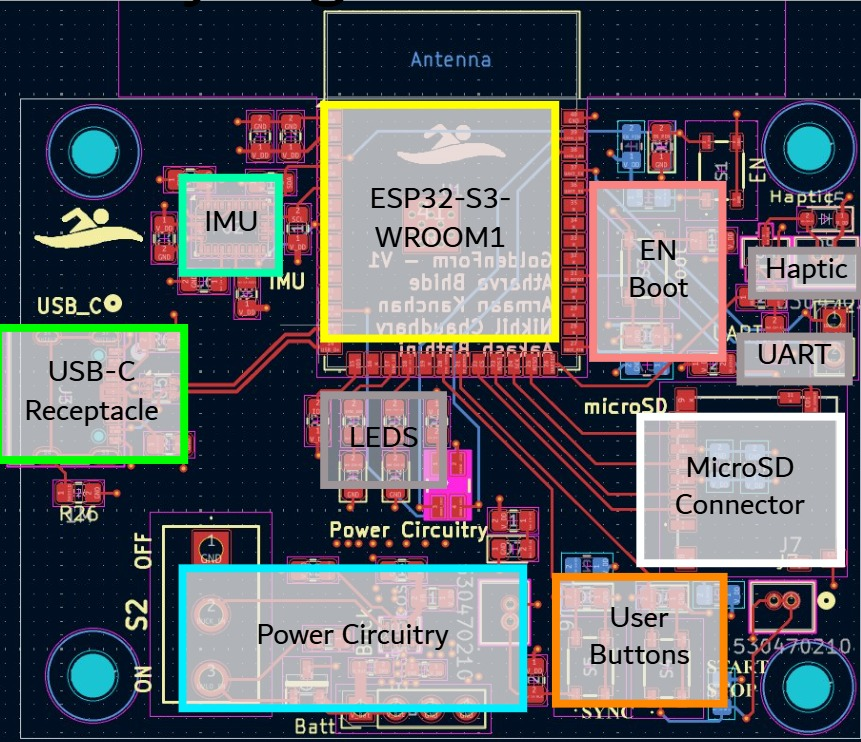
Schematic breakdown
The full schematic is organized into clearly separated functional blocks — useful both for routing and for debugging, since a bad rail or a miswired connector stays contained to one area:
- MCU (ESP32-S3-WROOM-1): center of the schematic — routes to every other block: GPIOs for the LEDs and buttons, I2C (SDA/SCL) to the IMU, SPI (MOSI/MISO/SCK/CS) to the microSD socket, UART for programming/debug, and a dedicated GPIO for the haptic driver.
- Power circuitry: a UVLO (under-voltage lockout) IC gates the buck-boost converter's enable line so the board browns out gracefully instead of glitching, and the buck-boost itself (forced-PWM mode) holds VOUT stable across the LiPo's full discharge range — this is TIDR 4-3-1 from the design requirements below.
- IMU (BNO055): I2C-only (no SPI fallback) to save power and routing — the address-select pin is tied to set the I2C address, and local decoupling caps sit right at the IMU's supply pins.
- SD card socket: a standard SPI-mode microSD connector with card-detect lines wired back to the MCU so firmware knows when a card is present before it tries to mount the filesystem.
- Haptic driver: a single N-channel MOSFET (AO3400A) switching the haptic motor, driven from a GPIO through a gate resistor — simple, since the firmware only needs on/off control, not PWM speed control.
- USB-C, LEDs, boot/enable buttons, user switches: standard support circuitry — CC1/CC2 pull-downs on the USB-C receptacle for cable orientation detection, ESD-protected debounced buttons for boot/enable/sync/start-stop, and three status LEDs (sync, start/stop, and a tri-color error LED).
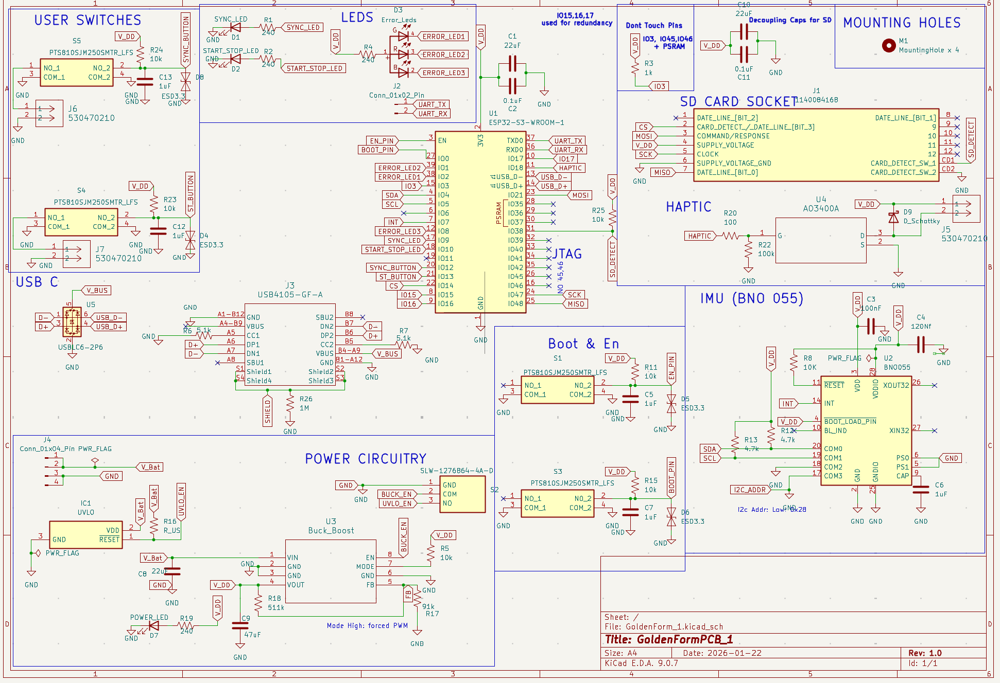
PCB layout
The layout keeps the IMU close to the board's physical center (so it best represents the wrist's actual rotation point), routes the antenna keep-out zone clear of copper per the enclosure's 5 mm antenna window, and groups each functional block into its own quadrant to keep the high-current power path short and away from the sensitive I2C lines feeding the IMU.

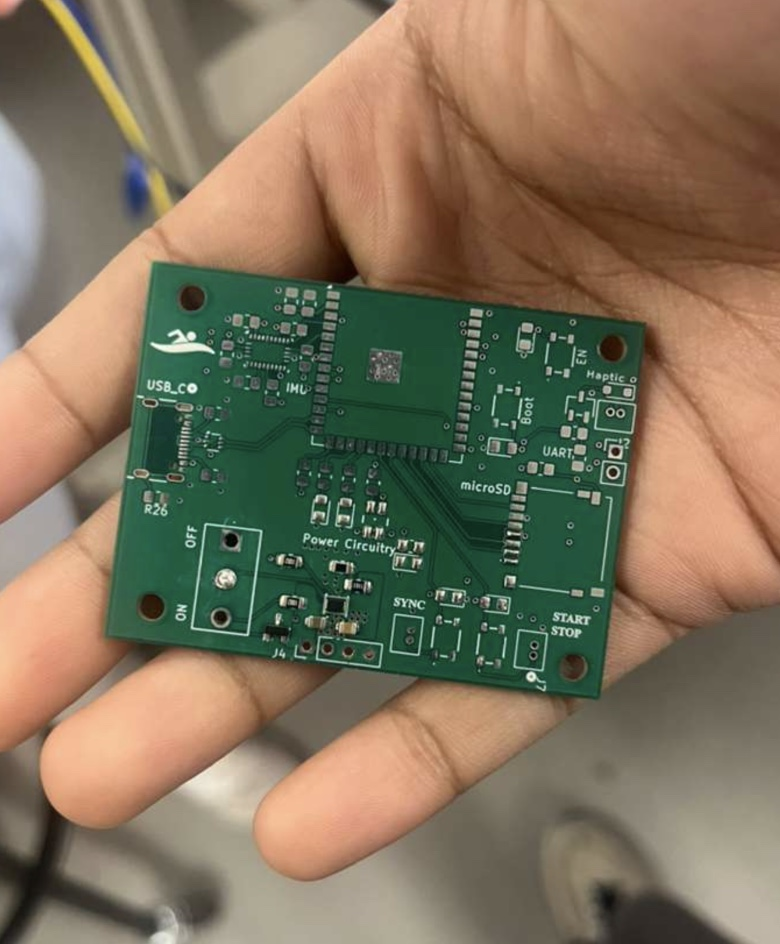
Assembly & bring-up
Populating the board started with hand-placing the ESP32 module and USB-C connector under a microscope before reflow, then working through each subsystem in isolation before trusting the full board.
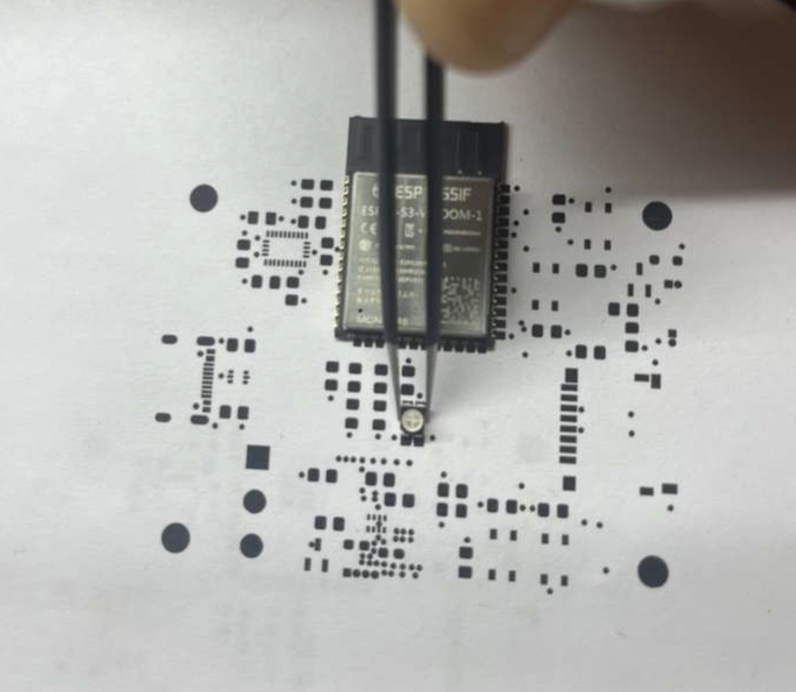
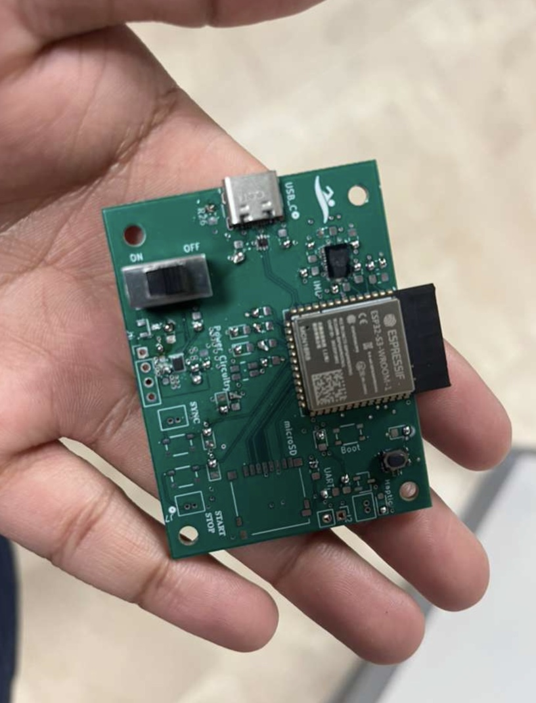
Bring-up surfaced exactly the kind of intermittent bug you'd expect from a hand-soldered I2C bus: the IMU would sometimes fail to enumerate on the very first power-up. Rather than treat that as a one-off, we traced it with a logic analyzer and turned it into a design requirement — the firmware retries IMU initialization up to 5 times with a 500 ms backoff before giving up and lighting the error LED (this is TIDR 1-3-1, discussed more in Firmware below).
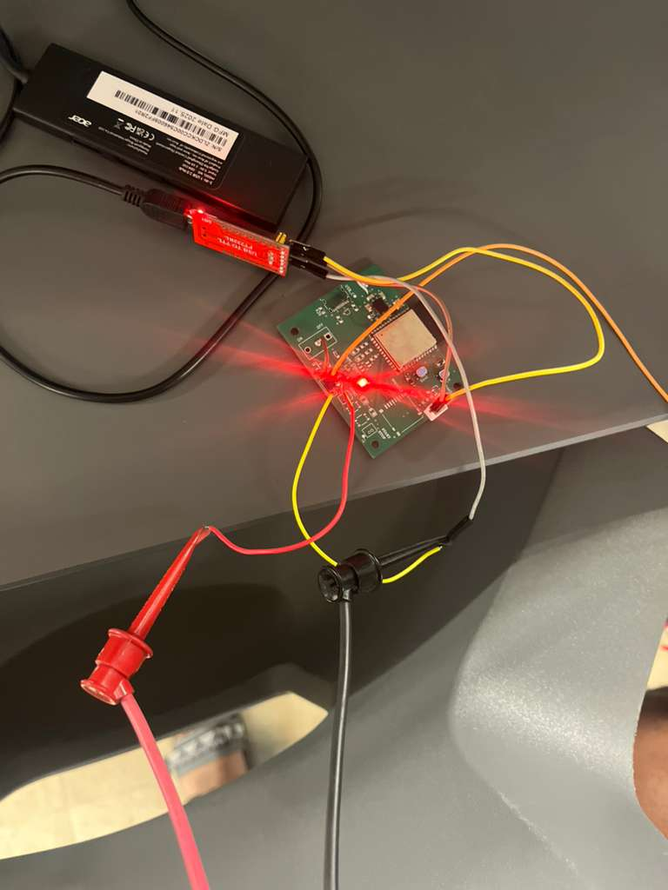
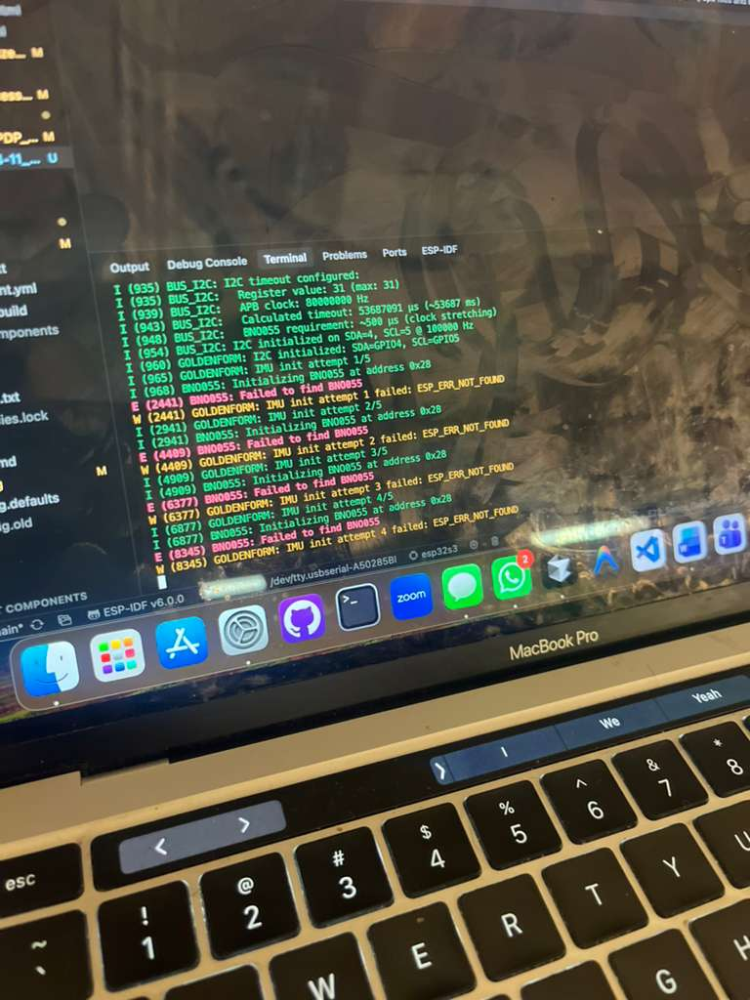
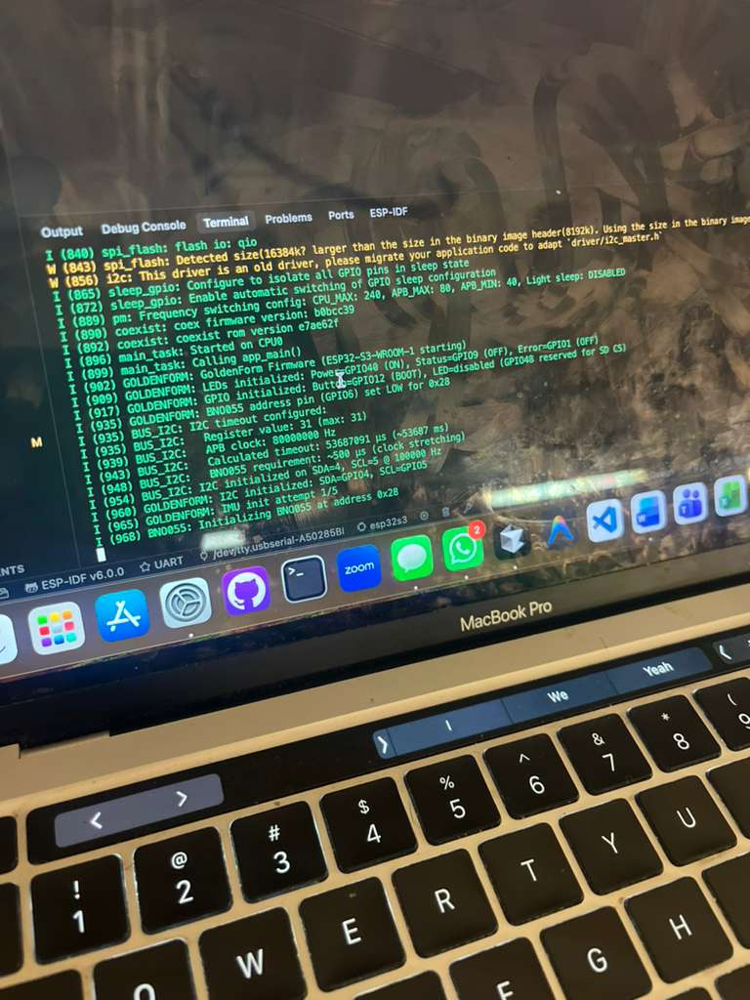
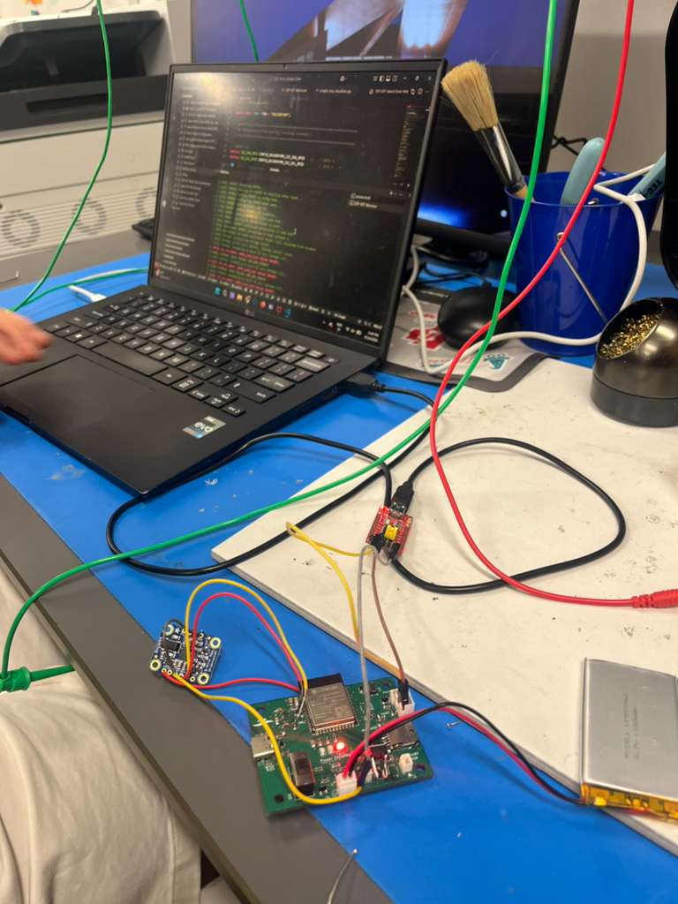
Enclosure
The board needed to fit a small off-the-shelf waterproof enclosure alongside its LiPo battery, so before finalizing the PCB outline we mapped both components against the enclosure's actual internal dimensions — including a hard keep-out zone around the antenna trace so it wouldn't be blocked by the enclosure's metal hardware.
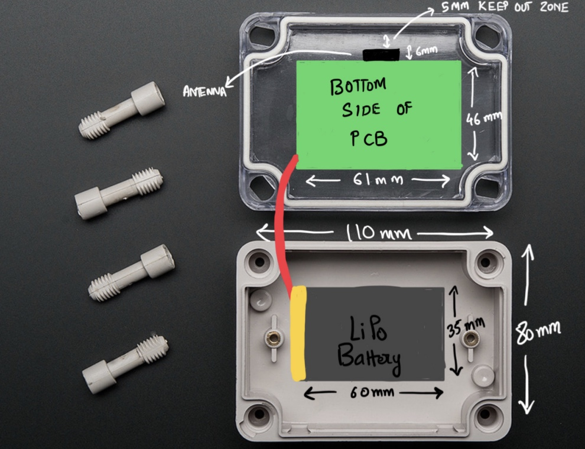
Firmware & Software
The firmware is built on ESP-IDF and targets the ESP32-S3. Its main components map directly onto the PCB's functional blocks: imu_bno055 (I2C driver + init/retry logic), stroke_detector (real-time stroke-phase detection and haptic triggering), storage (SD card mount, retry, and session file writing), wifi_server (the on-demand Wi-Fi AP and HTTP sync endpoint), protobuf (session data encoding), and bus_i2c. On the other end, a Python/JS dashboard (wifi_session_processor.py + integrated_session_viewer.html) receives synced sessions over HTTP, stores them in SQLite, and renders 3D stroke replay with drift-corrected hand position.
Every non-trivial decision in the firmware and dashboard was captured as a TIDR — Trade-Off Informed Design Requirement. There are 19 of them in total, each documenting one deliberate trade-off (e.g. "retry robustness" vs. "boot latency," or "battery life" vs. "always-available sync"). A few of the more consequential ones:
| TIDR | Decision | Trade-off |
|---|---|---|
| 1-3-1 | IMU init retries up to 5×, 500 ms apart, before error state | Boot latency vs. robustness — IMU failure is fatal to the wearable, so it gets the most retries of anything on the board |
| 1-1-2 | IMU communicates over I2C only (no SPI) | Bandwidth vs. power efficiency and simpler routing |
| 7-5-1 / 7-4-1 | SD card mounted over SPI, with bus-reinit retry logic on mount failure | Simpler PCB/driver vs. bandwidth; SD failure degrades gracefully (no logging) instead of bricking the device |
| 5-2-1 / 5-2-2 | Wi-Fi only turns on when the user holds the sync button; MCU (not the dashboard) orchestrates the SD → HTTP transfer | Battery life vs. always-on convenience |
| 6-1-3 | Per-stroke origin reset in the 3D replay view | Prevents long-session magnetometer drift from making the rendered hand crawl off-screen |
| 4-3-1 | Buck-boost regulation holds 3.1–3.5 V across the full battery discharge curve | Voltage regulation precision vs. cost/PCB complexity |
| 1-1-1 (stretch) | Haptic motor fires when a live stroke deviates from the reference "ideal" stroke | Real-time coaching feedback vs. alert fatigue and per-frame compute cost |
The five TIDRs above chain together into one real behavior: the IMU has to survive init (1-3-1) reading over I2C (1-1-2) before its samples ever reach the SD card (7-5-1/7-4-1); those sessions only leave the device when the user explicitly asks for a sync (5-2-1/5-2-2); and once they're on the dashboard, the replay view has to correct for drift (6-1-3) or the whole visualization is useless past a couple of minutes. None of these are independent decisions — that interdependency is exactly what the TIDR framework was built to track.
Verification
My main contribution to this project, beyond leading the team, was verification: going through the entire codebase and confirming that all 19 TIDRs were actually implemented the way the design docs claimed, not just planned. This wasn't a rubber-stamp — for each TIDR I traced the actual function calls, checked file paths and line numbers against the code map, and re-derived the retry counts and timing constants from source rather than trusting the documentation.
The result was a full verification report confirming every TIDR against real source: the IMU's 5× retry loop in main/app_main.c, the SD card's bus-reinit-and-retry logic in components/storage/storage.c, the sync-button-gated Wi-Fi AP path in the same file, the HTTP session-streaming handler in components/wifi_server/wifi_server.c, and the drift-correction math in the dashboard's gf_viz_integration.js — all checked out. The few items marked as "not directly verifiable in code" (like measured Wi-Fi throughput, which depends on runtime signal conditions rather than a hardcoded constant) were flagged explicitly as needing runtime testing instead of static verification, rather than silently passed.
Demo — SPARK Challenge
We presented the finished prototype at Purdue ECE's SPARK Challenge in the Bill and Shirley Rice Design Studio, with a live 3D stroke-replay demo running alongside the poster below.
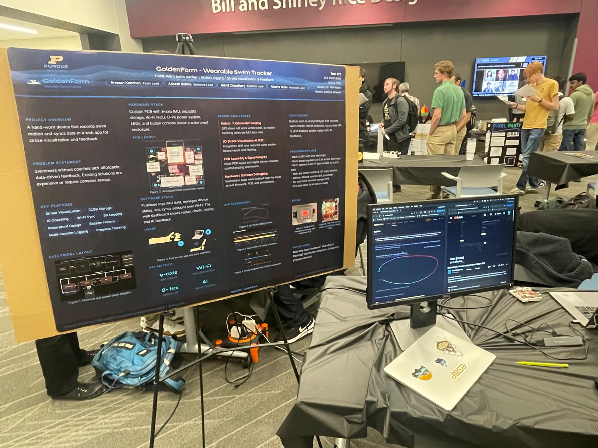
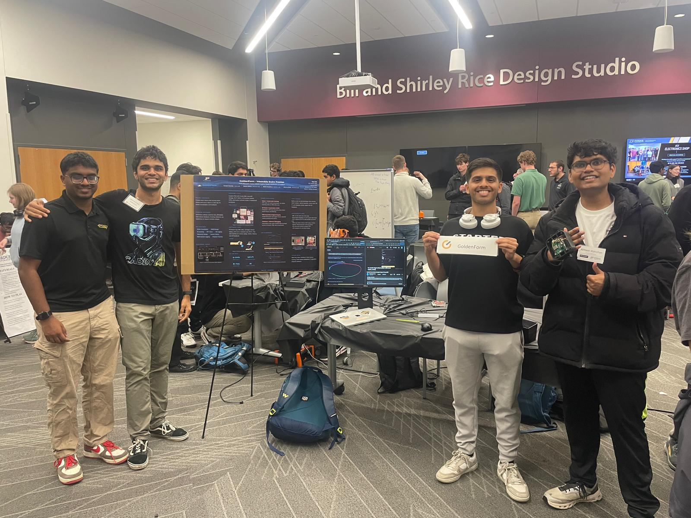
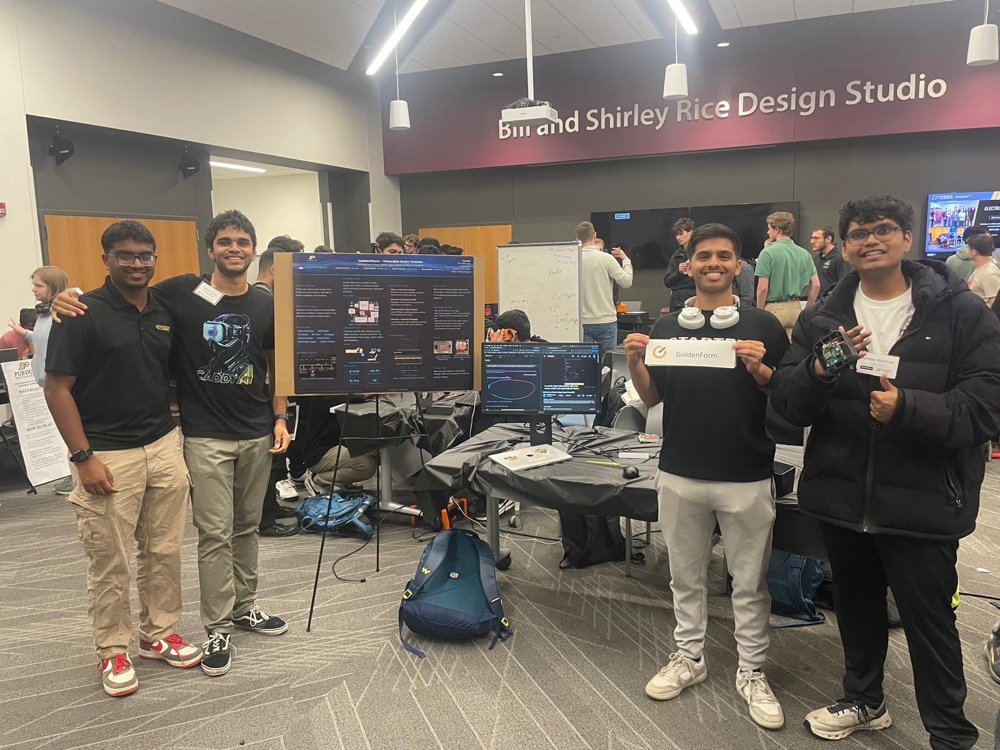
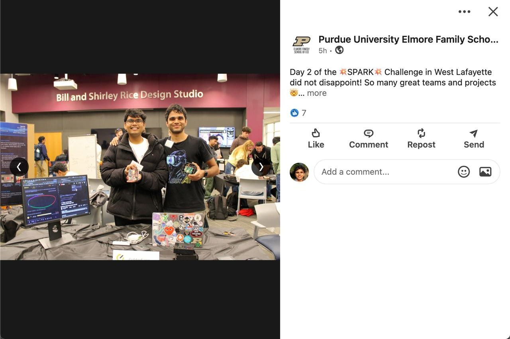
Conclusions
The hardest problems in this project weren't in any single subsystem — they showed up at the seams between hardware and firmware: a flaky I2C bus at bring-up that turned into a formal retry requirement, a drifting magnetometer that required rethinking the entire visualization's reference frame, and a battery-vs-connectivity trade-off that shaped how sync works end to end. Writing every one of those decisions down as a TIDR, and then actually verifying each one against the shipped code, is what let four people split hardware, firmware, and dashboard work in parallel without the pieces silently drifting apart from each other.
Contributions
Atharva Bhide — Hardware Lead; designed and led the custom PCB from schematic capture through layout and bring-up. Aakash Bathini — Software Lead; ESP-IDF firmware (IMU driver, stroke detection, storage, Wi-Fi server). Nikhil Chaudhary — Systems Lead; firmware/dashboard integration and the Wi-Fi sync data path. Armaan Kanchan (me) — Team Lead; coordinated the project and led verification, auditing the full codebase against all 19 TIDRs and authoring the verification report.
Repo & further reading
Full source — firmware, dashboard, hardware (KiCad schematics/layout/Gerbers), and the TIDR architecture & verification docs — is public: github.com/chaudhary-nikhil/E22_Senior_Design. See all projects for the rest of my write-ups.